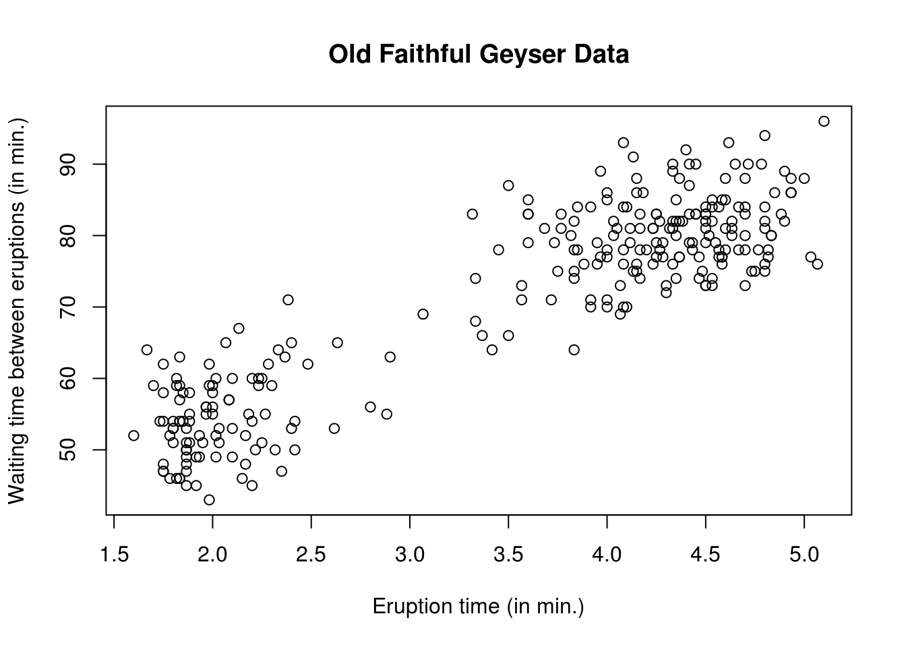
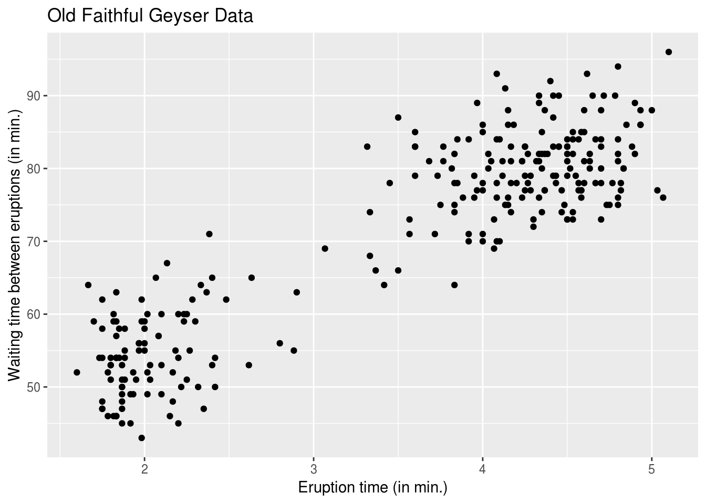

We start by loading a dataset of the Old Faithful Geyser of Yellowstone National park. - Data sets are typically stored inside a data.frame, a matrix-like object whose columns contain the variables and the rows the observation vectors. - The columns can be of different types (integer, double, logical, character), but all the column vectors must be of the same length. - Variable names can be displayed by using names(faithful). - Individual columns can be accessed using the column name using the $ operator. For example, faithful$eruptions will return the first column of the faithful dataset. - To load a package already present in an R package, use the command data with the name of the package as an argument (must be a string).
The following functions can be useful to get a quick glimpse of the data:
summary provides descriptive statistics for the variable.str provides the first few elements with each variable, along with the dimensionhead (tail) prints the first (last) \(n\) lines of the object to the console (default is \(n=6\)).# Load Old faithful dataset
data(faithful, package = "datasets")
# Query the database for documentation
?faithful
# look at first entries
head(faithful)## eruptions waiting
## 1 3.600 79
## 2 1.800 54
## 3 3.333 74
## 4 2.283 62
## 5 4.533 85
## 6 2.883 55str(faithful)## 'data.frame': 272 obs. of 2 variables:
## $ eruptions: num 3.6 1.8 3.33 2.28 4.53 ...
## $ waiting : num 79 54 74 62 85 55 88 85 51 85 ...# What kind of object is faithful?
class(faithful)## [1] "data.frame"Other common classes are matrix and list. The former has attributes dim, ncol and nrow in addition to length, which gives the total number of elements. A list is an unstructured class whose elements are accessed using double indexing [[ ]] and elements are typically accessed using $ symbol with names. To delete an element from a list, assign NULL to it. data.frame is a special type of list where all the elements are vectors of potentially different type, but of the same length.
The faithful dataset consists of two variables: the regressand waiting and the regressor eruptions. One could postulate that the waiting time between eruptions will be smaller if the eruption time is small, since pressure needs to build up for the eruption to happen. We can look at the data to see if there is a linear relationship between the variables.
An image is worth a thousand words and in statistics, visualization is crucial. Scatterplots are produced using the function plot. You can control the graphic console options using par — see ?plot and ?par for a description of the basic and advanced options available.
Once plot has been called, you can add additional observations as points (lines) to the graph using point (lines) in place of plot. If you want to add a line (horizontal, vertical, or with known intercept and slope), use the function abline.
Other functions worth mentioning at this stage:
boxplot creates a box-and-whiskers plothist creates an histogram, either on frequency or probability scale (option freq = FALSE). breaks control the number of bins. rug adds lines below the graph indicating the value of the observations.pairs creates a matrix of scatterplots, akin to plot for data frame objects.There are two options for basic graphics: the base graphics package and the package ggplot2. The latter is a more recent proposal that builds on a modular approach and is more easily customizable — I suggest you stick to either and ggplot2 is a good option if you don’t know R already, as the learning curve will be about the same. Even if the display from ggplot2 is nicer, this is no excuse for making proper graphics. Always label the axis and include measurement sunits!
# Scatterplots
# Using default R commands
plot(waiting ~ eruptions, data = faithful,
xlab = "Eruption time (in min.)",
ylab = "Waiting time between eruptions (in min.)",
main = "Old Faithful Geyser Data")
#using the grammar of graphics (more modular)
#install.packages("ggplot2") #do this once only
library(ggplot2)
ggplot2::ggplot(data = faithful, aes(x = eruptions, y = waiting)) +
geom_point() +
labs(title = "Old Faithful Geyser Data",
x = "Eruption time (in min.)",
y = "Waiting time between eruptions (in min.)")
A simple linear model of the form \[y_i = \beta_0 + \beta_1 \mathrm{x}_i + \varepsilon_i,\] where \(\varepsilon_i\) is a noise variable with expectation zero and \(\mathbf{x} = \mathsf{eruptions}\) and \(\boldsymbol{y} = \mathsf{waiting}\). We first create a matrix with a column of \(\mathbf{1}_n\) for the intercept. We bind vectors by column (cbind) into a matrix, recycling arguments if necessary. Use $ to obtain a column of the data frame based on the name of the variable (partial matching is allowed, e.g., faithful$er is equivalent to faithful$eruptions in this case).
## Manipulating matrices
n <- nrow(faithful)
p <- ncol(faithful)
y <- faithful$waiting
X <- cbind(1, faithful$eruptions)Recall that \(\mathbf{H}_{\mathbf{X}} \equiv \mathbf{X}(\mathbf{X}^\top\mathbf{X})^{-1}\mathbf{X}^\top\) is the orthogonal projection matrix onto \(\mathsf{span}(\mathbf{X})\). The latter has \(p=2\) eigenvalues equal to 1, is an \(n \times n\) matrix of rank \(p\), is symmetric and idempotent.
We can verify the properties of \(\mathbf{H}_{\mathbf{X}}\) numerically using all.equal to check for equalities. Whereas we will frequently use == to check for equality of booleans, the latter should be avoided — computer arithmetic is only exact in base 2. For example, 1/10 + 2/10 - 3/10 == 0 will return FALSE, whereas all.equal(1/10 + 2/10 - 3/10, 0) will return TRUE.
Hx <- X %*% solve(crossprod(X)) %*% t(X)
# Create projection matrix onto complement
# `diag(n)` is the n by n identity matrix
Mx <- diag(n) - Hx
#Check that projection leaves X invariant
isTRUE(all.equal(X, Hx %*% X))## [1] TRUE#Check that orthogonal projection maps X to zero matrix of dimension (n, p)
isTRUE(all.equal(matrix(0, nrow = n, ncol = p), Mx %*% X))## [1] TRUE#Check that the matrix Hx is idempotent
isTRUE(all.equal(Hx %*% Hx, Hx))## [1] TRUE#Check that the matrix Hx is symmetric
isTRUE(all.equal(t(Hx), Hx))## [1] TRUE#Check that only a two eigenvalue are 1 and the rest are zero
isTRUE(all.equal(eigen(Hx, only.values = TRUE)$values, c(rep(1, p), rep(0, n - p))))## [1] TRUE#Check that the matrix has rank p
isTRUE(all.equal(Matrix::rankMatrix(Hx), p, check.attributes = FALSE))## [1] TRUEISLR and load the dataset Auto. Be careful, as R is case-sensitive.Autox with horsepower and mileage per gallon as response y.y against x. Is there a linear relationship between the two variables?x and create a projection matrix.